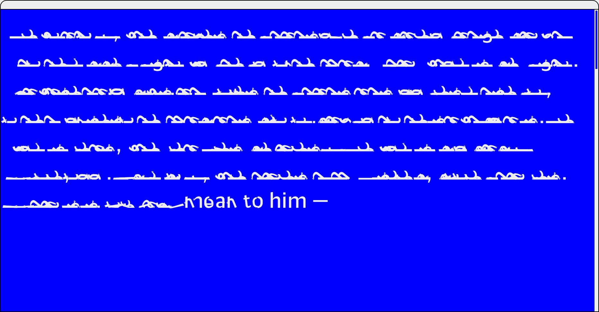
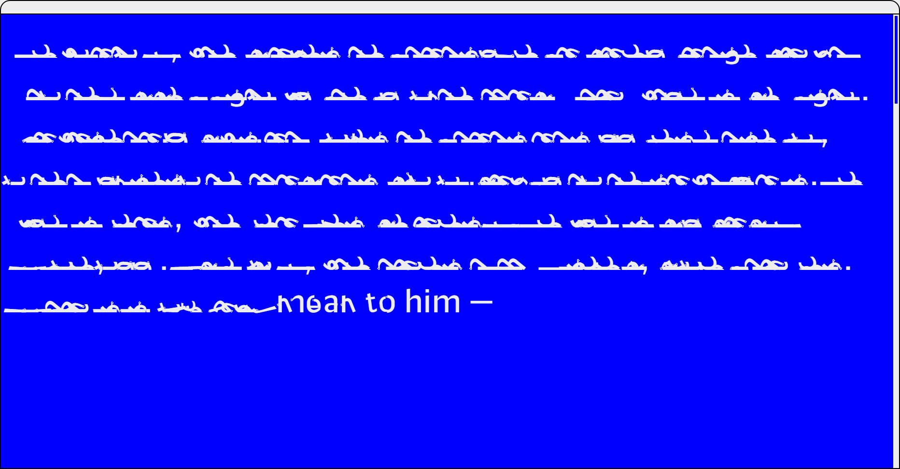

🡡 In this passage about the impermanence of literacy in society, each word disintegrates almost as soon as it appears on screen.

 

Separate/Disintegrate variable font
Inspired by Octavia Butler’s short story “Speech Sounds,” I designed this thematic variable font in Glyphs and programmed its accompanying type specimen in JavaScript. The typeface is made of individual letter parts which can be animated from an expanded view to a pile of collapsed parts.
View live site↗
🡡 This passage demonstrates how the characters communicate their names without the use of language. The text will slowly become unintelligible as the user hovers over the words, each one being replaced with a rhyming alternate.
🡡 Use this type tester to explore the possibilities of the typeface. The read-aloud feature will generate unexpected results.